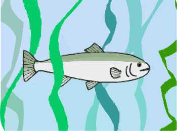
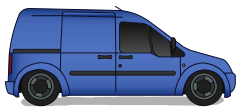
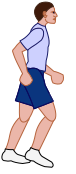
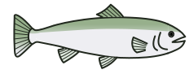

Doorway

Change the size and speed of the target objects.
Scanning
Scan delay (seconds)
Click on the cars to make them move

Click on the coloured boxes to set off the fireworks.
Click on the football to kick the ball.

Click on the balloon to pop it
Click on the fish.
